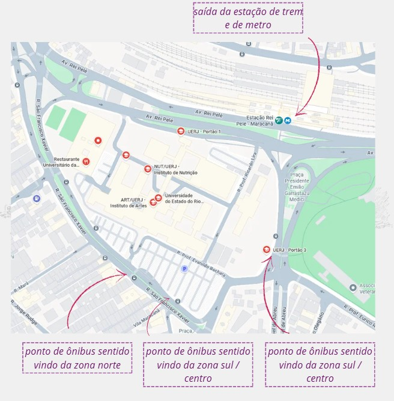
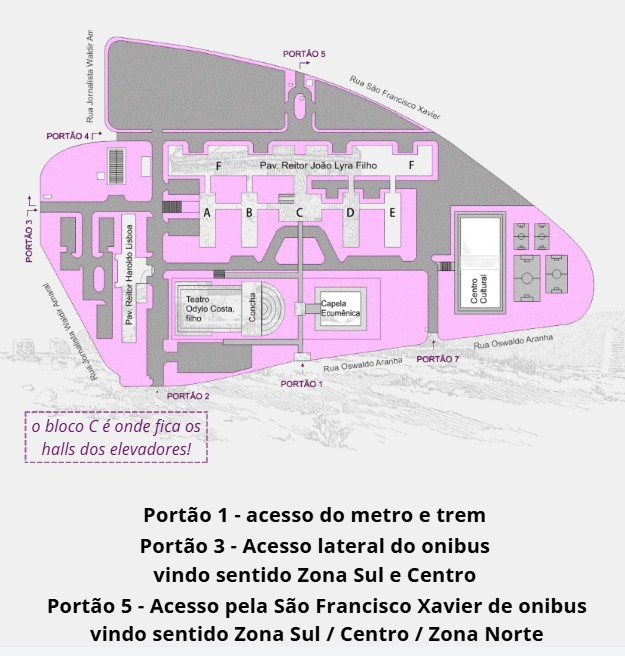

O I Workshop Materialidades Antigas será realizado na Universidade do Estado do Rio de Janeiro (UERJ), Campus Maracanã.
The I Workshop on Ancient Materialities will take place at the State University of Rio de Janeiro (UERJ), Maracanã Campus.
Universidade do Estado do Rio de Janeiro (UERJ)
Campus Maracanã
Rua São Francisco Xavier, 524
Pavilhão João Lyra Filho – Bloco F – Sala 9024F
Maracanã, Rio de Janeiro – RJ, Brasil
State University of Rio de Janeiro (UERJ)
Maracanã Campus
524 São Francisco Xavier Street
João Lyra Filho Building – Block F – Room 9024F
Maracanã, Rio de Janeiro, Brazil
Dependendo da região da cidade, você poderá utilizar as seguintes linhas:
Os pontos de desembarque mais próximos são:
Depending on where you are in the city, the following bus lines provide access to UERJ:
The closest bus stops are located on São Francisco Xavier Street, 28 de Setembro Avenue (Boulevard), and Professor Manoel de Abreu Street.

Para chegar à UERJ utilizando o sistema ferroviário da SuperVia, desembarque na Estação Maracanã, localizada a poucos minutos de caminhada do campus.
Os seguintes ramais atendem a estação: Deodoro, Japeri, Santa Cruz, Belford Roxo e Saracuruna/Gramacho.
Caso utilize o metrô, embarque na Linha 2 e desembarque na Estação Maracanã.
Ao sair da estação, siga a sinalização em direção ao Complexo do Maracanã/Radial Oeste e caminhe aproximadamente 200 a 300 metros até o Portão 1 da UERJ, próximo à Avenida Rei Pelé.
To reach UERJ by suburban train (SuperVia), get off at Maracanã Station, located just a few minutes' walk from the campus.
The station is served by the following lines: Deodoro, Japeri, Santa Cruz, Belford Roxo, and Saracuruna/Gramacho.
If travelling by metro, take Line 2 and get off at Maracanã Station.
After leaving the station, follow the signs toward the Maracanã Complex/Radial Oeste, then walk approximately 200–300 metres to Gate 1 of UERJ, near Rei Pelé Avenue.
